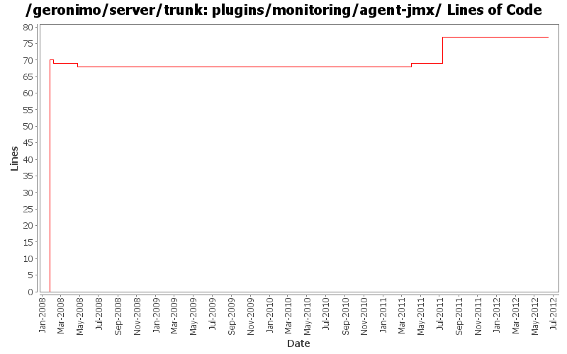

[root]/plugins/monitoring/agent-jmx
 src
(0 files, 0 lines)
src
(0 files, 0 lines)
 main
(0 files, 0 lines)
main
(0 files, 0 lines)
 java
(0 files, 0 lines)
java
(0 files, 0 lines)
 org
(0 files, 0 lines)
org
(0 files, 0 lines)
 apache
(0 files, 0 lines)
apache
(0 files, 0 lines)
 geronimo
(0 files, 0 lines)
geronimo
(0 files, 0 lines)
 monitoring
(0 files, 0 lines)
monitoring
(0 files, 0 lines)
 jmx
(1 files, 534 lines)
jmx
(1 files, 534 lines)
 snapshot
(2 files, 288 lines)
snapshot
(2 files, 288 lines)
 snapshot
(0 files, 0 lines)
snapshot
(0 files, 0 lines)

| Author | Changes | Lines of Code | Lines per Change |
|---|---|---|---|
| Totals | 15 (100.0%) | 109 (100.0%) | 7.2 |
| ecraig | 3 (20.0%) | 70 (64.2%) | 23.3 |
| djencks | 4 (26.7%) | 26 (23.9%) | 6.5 |
| genspring | 2 (13.3%) | 9 (8.3%) | 4.5 |
| kevan | 1 (6.7%) | 2 (1.8%) | 2.0 |
| xiaming | 1 (6.7%) | 1 (0.9%) | 1.0 |
| jdillon | 3 (20.0%) | 1 (0.9%) | 0.3 |
| gawor | 1 (6.7%) | 0 (0.0%) | 0.0 |
Update trunk version to 4.0.0-SNAPSHOT
1 lines of code changed in 1 file:
GERONIMO-5599 Reenable monitoring admin console portlets, Patch from Shenghao Fang.
8 lines of code changed in 1 file:
enable build of agent-jar and agent-jmx bundles.
1 lines of code changed in 1 file:
GERONIMO-5290 fix many of the deprecation warnings from maven 3
3 lines of code changed in 1 file:
GERONIMO-4655 upgrade version to 3.0-SNAPSHOT, make a few things more consistent
1 lines of code changed in 1 file:
GERONIMO-4415 start of code cleanup and use of jpa in console. Also add a server assembly for testing
1 lines of code changed in 1 file:
GERONIMO-4239, sort of. Use transitive depenedencies in c-m-p everywhere. This may break stuff.... let me know
21 lines of code changed in 1 file:
(GERONIMO-3985) Use SLF4J as the primary logging facade for Geronimo
1 lines of code changed in 1 file:
Drop *most* per-module legal muck, a few modules have additions to the standard... so left them in place for resolution later
0 lines of code changed in 2 files:
remove snapshot dependencies, add annotation spec dependency to jaxws-ejb test
0 lines of code changed in 1 file:
upgrade trunk to 2.2-SNAPSHOT
2 lines of code changed in 1 file:
GERONIMO-3790
monitoring agent should provide jmx support
Patch by Viet Nguyen
Committing this as thus far it is functional, keep jira open until confirmed no problems
70 lines of code changed in 3 files: